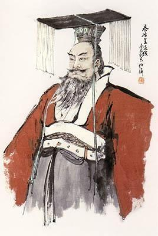

Related pictures
- 


Qin Shihuang (259-210 years ago) was born in Handan, Zhao, the son of king Qin zhuangxiang. he was a famous politician, strategist and reformer in history. The completion of the unification of China has laid the foundation of China's political system for more than 2,000 years, and has been praised as "the first emperor through the ages".
He ascended the throne at the age of 13 and unified China to establish the Qin Dynasty at the age of 39. He was the first monarch in Chinese history to use the title of "emperor". Politically, the system of "three officials and nine ministers" will be implemented, while the local government will scrap the system and separate the prefectures and counties. The implementation of the book with the same language, car with the same rail, unified measurement. To attack the Huns to the north, to invade hundreds of Vietnam to the south, and to build the Great Wall.
Qin Shihuang was born on January 27, 259 B.C. in the first month of the 48th year of king Qin Zhao. he was born in the ruins of Wen Ming temple and south of congtai in Handan kuo city (big north city) at that time, and in the area of zhujiaxiang, east of zhongjie and southwest of congtai in this city. He was the son of King Qin Zhuangxiang and the 35th grandson of E Lai, a great minister of the Shang Dynasty. He won the surname Zhao and was a famous official.
In 247 B.C., King Qin Zhuangxiang died, and 13-year-old Ying Zheng was appointed King of Qin. At that time, Lv Buwei was Qin Xiang and was only in power. Qin Wangzheng acceded to the throne as a young man and honored Lv Buwei as Guanzhong. His national government was controlled by Lv Buwei. In the first 239 years, Qin Wang was 21 years old and was about to take over the government, but at this time, fierce political struggle broke out in the Qin government.
At the beginning, Lv Buwei not only controlled the imperial court, but also had an affair with the queen mother (Zhao Ji). After seeing Qin Wang Zheng getting older, he was afraid of being discovered, wanted to leave the queen mother, and was afraid of resentment from the queen mother, so he gave his guest Lao Ai a false carrion, only pulling out his beard and eyebrows to the queen mother for her pleasure.
Qin Wang Zheng grew up, and Lao Ai said that the queen mother's bedroom had bad feng shui and should be moved away from here. With the permission of Qin Wang Zheng, they moved to the detached palace in Yong County. As a result, the queen mother gave birth to two illegitimate children. Lao Ai also claimed to be the false father of Qin Wang Zheng. Lao Ai rebuked a minister after getting drunk: "I am the false father of Qin Wang. How dare you provoke me." After hearing this, the minister was very angry and secretly found a chance to tell Qin Wang Zheng about the relationship between Lao Ai and the queen mother. Qin Wang Zheng was very angry when he learned that Lao Ai panicked and was ready to rebel. At that time, with the help of the Empress Dowager, Lao Ai was granted the title of Long Xin Hou, with the titles of Shanyang, Taiyuan and other places, and received his own partisans. Lao Ai has been operating in Yongcheng for many years and has established a huge power. It is a powerful political force in Qin after Lv Buwei.
In 238 BC, Qin Wang Zheng held a crown ceremony at the Qi Nian Palace in Yongcheng. Lao Ai used the Imperial Seal of the King of Qin and the Imperial Seal of the Queen Mother to launch a rebellion and attack the Qi Nian Palace. Qin Wang Zheng had already arranged 3,000 soldiers in Qi Nian Palace to defeat the rebels. Lao Ai turned to the Xianyang Palace, where there were troops. Lao Ai fled alone and was arrested shortly afterwards. Qin Wang Zheng cracked Lao Ai's car and exposed his body to the public. And put his mother Zhao Ji in Yongcheng Fengyang Palace; Two illegitimate children of Lao Ai and the Queen Mother were killed.
In 237 B.C., Qin Wang relieved Lv Buwei of his position and exiled Lv Buwei to Bashu. Knowing that his relationship with the king of Qin was irreversible, Lv Buwei committed suicide by drinking poisoned wine. After that, although the king of Qin listened to the nobles of Qin and wrote the book of marching out the patrons of the six countries, he was dissuaded by Li si's book of marching out. after that, he still used Wei Xuan, Li si and others.
See: Qin's War to Destroy Six Countries
After Qin Wang took power, he appointed Wei Xuan and Li si and others to actively carry out a unified strategy.
In 234 BC, the Qin Dynasty attacked Zhao on a large scale and established Yanmen County and Yunyun County from Zhao's land.
In 231 BC, the state of Wei was forced to give part of its land to the Qin dynasty, and south Korea was also forced to give Nanyang land to the Qin dynasty. The Qin Dynasty sent Nexton to be a fake guard in Nanyang.
In 230 BC, the Qin Dynasty sent Nexton to attack South Korea, captured Han Wang and set up Yingchuan County in South Korea. South Korea perished. At this time, there was a great drought in Zhao. Qin led Wang Jian's territorial troops straight down to Jingxing (west of Jingxing County, Hebei Province), while Qin led Yang Duan and Hanoi's troops into Handan, the capital of Zhao. Zhao sent Li Mu and Sima Shang to lead the army to resist. Guo Kai, the favorite minister of the king of Zhao, was bribed by the state of Qin, spreading rumors that Li Mu and Sima Shang were conspiring against each other. Zhao Wang therefore replaced Li Mu and Sima Shang with Zhao Cong and Yan Ju and killed Li Mu.
In 229 BC, Wang Jian defeated Zhao Jun, killed Zhao Cong and captured Zhao Wang. Zhao Gongzijia led hundreds of his clan to Daijun, Zhao, and established himself as acting king. Qin established Handan County in the vicinity of Zhaodu Handan.
In 227 BC, Qin sent Wang Jian and Xin Sheng to attack Yan. Yan and Dai fought back and were defeated by Qin Jun to the west of Yishui. The following year Qin Jun captured Jicheng in Yan Dou. The prince likes to move the capital to Liaodong. Qin pursued Li Xin with troops. The prince was pleased to follow the plan of Wang Jia, killed Taizi Dan and offered his head to Qin for peace.
In 226 BC, a rebellion occurred in the capital of South Korea. Qin dispatched troops to quell the rebellion in South Korea and seized the opportunity to execute Han Wang An.
In 225 B.C., Qin Wang Zheng sent general Wang Ben to attack Wei and surrounded Daliang (Kaifeng City), the capital of Wei, leading the Yellow River to irrigate the city. In three months, Daliang City was destroyed, Wang Wei fell and the state of Wei perished. Qin Dynasty established Dangjun in the eastern part of Wei Dynasty.
In 225 BC, the Qin Dynasty sent 200,000 troops from Li Xin and Mengwu to attack Chu. Li Xin attacked Pingyu of Chu (Pingyu County North) and Mengwu attacked the tomb of Chu (Linquan County, Anhui Province) and achieved initial victory. Qin Chu's two armies met in the city of Fuyi (now Fuji, southeast of Bo County in Anhui Province). Chu took advantage of Qin Jun's unprepared counterattack and defeated Qin Jun. After Qin Wang Zheng sent Wang Jian with 600,000 troops to the war, he defeated Chu Jun in Qi (now southeast of Suxian County in Anhui Province), forcing Chu to kill Xiang Yan. Then Qin Jun invaded Shouchun, the capital of Chu, and captured the Chu king. Qin Yu Chu set up Jiujiang County (Shouxian County in Anhui Province) and Changsha County (Changsha City in Hunan Province).
In 222 BC, Wang Jian pacified the southern part of Chu, subdued the king of Yue, set up Huiji County, and the state of Chu perished. While destroying Chu, Qin continued to expand eastward, setting up counties one after another, capturing Qi and Xue counties (Qufu County, Shandong Province).
In 222 B.C., the Qin government sent Wang Ben to attack Yan's Liaodong, captured Yan Wang Xi and destroyed Yan. Then he returned to the army and took over from Wang Jia, establishing Daijun (southwest of Wei County in Hebei Province) and Liaodong County (old town of Liaoyang City in Liaoning Province).
221 years ago, Qin attacked Wang Ben from Yan to Qi, captured Qi Wang Jian, destroyed Qi, and established Qi County (northeast of Zibo City, Shandong Province) and Langye County (Xiahe City, southwest of Jiaonan County, Shandong Province) in Qi's old land.
the state of Qin annexed six countries in succession in 10 years from 230 BC to the time of the extermination of qi. then in 219 BC, it began the "war of Qin attacking hundreds of yue" to pacify hundreds of yue in the south. from then on, it completed the great cause of unification, ended the era of the kingdom under the dictatorship of nobles and princes, and entered the era of the empire of monarchs.
see: Qin dynasty
in the 26th year of Qin Wang Zheng's reign (221 years ago), after the six countries were destroyed, the title of "king" was not enough to show his business. he was called emperor. And continue to implement Xiao Gong reform since Shang Yang's legalist policy, strengthen autocratic monarchy, weaken the old aristocracy, promoted by the military rise of aristocracy.
the land ownership of the Qin empire basically maintained the land system of "Wang you" in the western Zhou dynasty, and changed "Wang you" into "state-owned". In the first 216 years, Qin Shihuang ordered farmers across the country to report the actual amount of land they had in order to levy taxes. Moreover, even civilians can be granted land and titles as long as they have military merit. Although the state of Qin implemented the "land grant system" during the Shang yang political reform, the farmers' land was nominally owned by the state and cultivated privately, but the move enabled the people of the whole country to actually occupy the original "king-owned" land, which soon evolved into the land that farmers and officials could freely buy and sell, so the Shang yang political reform of the state of Qin finally facilitated the development of private land.
after Qin Shihuang abolished the enfeoffment system, he established a system of prefectures and bureaucracies from the central to the local levels. At the beginning, it was divided into 36 counties in the country, and later increased to 46 counties with the expansion of land. Xianyang (Qindu District, Xianyang City, Shaanxi Province) was designated as the capital. The top bureaucrats in the central government are the prime minister, the imperial censor and the marshal, also known as the "three lords". The prefect of the local county is in charge, and the prefect of the county is in charge. The system of prefectures and counties initially broke the patriarchal clan system of blood ties, while feudal and bureaucratic systems replaced the hereditary system of nobles.
in order to consolidate the political power, Qin Shi Huang also implemented a series of policies, mainly: unified currency and weights and measures; Unified writing; Building the Great Wall, Chidao and Zhidao; Forced migration of the six countries to enrich the people and civilians. After Qin unified the six countries, in order to prevent the nobles of the six countries from "resurrecting" according to their clans, they were forced to move to Xianyang to take care of the imperial tombs or migrate to remote areas in southwest China. some civilians were also forced to migrate at the same time, which was called "migrating to captivity" and forced labor such as mining and opening salt wells. In the first 215 years, Qin seized Meng Tian from Jiuyuan Henan and set up 34 counties to establish Jiuyuan County (which is located in the northwest of Baotou City in Inner Mongolia).
after the unification of the six countries, all the schools and talents that Shang yang strongly opposed came to serve Qin. perhaps Qin Shi Huang adopted the "Shang yang reform with Qin characteristics", which led to the prevalence of various superstitions in the Qin empire. Among them, Huang Laodao's and Yin-Yang's scholars put forward the so-called "Five Virtues Ending at the Beginning" by integrating the theories of Confucianism, Legalism and Taoism. They were especially trusted by the First Emperor, who believed that Qin was a water virtue, Zhou was a fire virtue, and water could control fire. Therefore, Qin won the world. Confucian scholars and alchemists from Qi Yan have also revised the Confucian "Fengchan" in a new way. It is widely said that emperors have held the ceremony of Fengchan since ancient times.
see: Qin Shi Huang's tour, Qin Shi Huang's tour to the east, Qin Shi Huang's carving, Shi Huang's shooting fish, Xu fu's crossing to the east
from 28 to 31 years (219-215 years ago) Qin Shi Huang toured the eastern coast, Jianghuai valley and the north. wherever he went, he carved stones to praise his merits.
In the late period, Qin Shihuang was infatuated with immortality Immortal Technique and believed in destiny. It is also said that the three islands of Penglai, abbot and yingzhou on the sea are places where immortals live, and there is a "medicine for immortality" that can be taken to "live forever". Qin Shihuang wants to be a immortal. Some strange and pedantic followers, such as Lu Sheng, Han Zhong, Chui fook and Hou Sheng, defected to the Qin Dynasty.
Lu Sheng persuaded Qin Shihuang to say: "We have been looking for ganoderma lucidum, miraculous drugs and immortals, but we can't find them. There must be something competing with them. We suggest that you travel secretly from time to time to expel evil spirits. Only when the evil spirits are avoided can the immortal reality come. If you let the officials know where you live, it will hinder your communication with the immortals. I hope you don't let others know where you live in the palace. In this way, the undead medicine may be available. " Qin Shihuang declared to the public: "I admire immortals and real people. I will call myself" real people "and will no longer call myself" me. " He also ordered the 270 temples within 200 miles near Xianyang to be connected with each other by flyovers and walkways, with draperies, bells and drums and beauties inside, all of which must not be moved according to their registered positions. Where the emperor went, if anyone said anything, he would be sentenced to death.
chui fook and others spent a lot of time and money searching for magic drugs in the sea, but could not find them. Fearing punishment, he deceived Qin Shihuang and said, "There are three sacred mountains in the sea." But we are often troubled by sharks, so we cannot reach them. It is hoped that the emperor will send people who are good at shooting to go with him, and when he meets a big shark, he will shoot it with a series of crossbows. "It happened that Qin Shihuang dreamed of fighting with Poseidon, whose shape was similar to human form. Dr. Zhan Meng said: "The water god could not have seen it. He used the big fish Jiaolong as a detective. At present, the emperor's sacrifice is considerate and respectful, but there is such an evil god. Only by removing it can we find the true good god. " So Qin Shihuang ordered the people who entered the sea to carry tools to catch a big fish, and personally took crossbows to shoot a big fish. Qin Shihuang sent him to lead 3,000 boys and girls to take a ship to the sea to beg for Mount Xianshan. After that, he did not know where to go. Perhaps he was shipwrecked or he drifted to an island to settle down. The latter is more likely. Folklore says he has gone to Japan.
see: burning books to pit Confucianism and pit warlocks
in Qin Shi Huang's thirty-two years (215 years ago), Lu sheng, a Yan man, asked for immortal traces such as xianmen and gaoshi, and later Han tong, Hou gong and Shi sheng asked for immortal drugs. For this kind of behavior of Qin Shihuang, there are Confucian scholars who have expressed their remonstrance. Dr. Qi Ren Chun Yu Yue suggested that the first emperor still implement the policy of dividing the children of imperial clan into vassals, and the first emperor handed it over to the liegeman for discussion. Prime Minister Reese objected. Reese's memorials prompted Emperor Qin Shihuang to order books to be burned and banned, stipulating that all history books should be burned except in Qin Dynasty. If you don't have a doctor's position, you dare to hide "poems", "books" and "theories" from all over the world, and you will learn to keep them and burn them. Those who dare to occasionally speak "poems" and "books" will abandon the city. Those who live in the past but not today belong to the same clan. Officials who see whether they know or not are guilty of the same crime. It was ordered not to burn for the next 30 days, and Qing became the city's official. The book of medical divination and tree planting. If you wish to learn the law, take officials as your teacher.
the first emperor felt cheated in his heart, so he ordered the censors to ask the students about the case and exposed each other's involvement of more than 460 people. the first emperor ordered them to be buried alive in Xianyang. Some people think that according to the Records of the Historian, it was the warlock, not the Confucian scholar, who killed Qin Shihuang. However, according to the Records of the Historian, Qin Shihuang's Biography, the people killed by Qin Shihuang "all recite Confucius".
Participation: Death of the First Emperor, Change of Sand Dunes, Reese, Zhao Gao, Hu Hai
in the thirty-seventh year of Qin Shi Huang (the first 210 years), Qin Shi Huang died in the dune palace (now Guangzong, Xingtai) on his fifth east tour. After Qin Shihuang's death, Zhao Gao adopted the method of persuading Hu Hai to threaten Reese. After a plot at Dune Palace, the two forged Qin Shihuang's imperial edict and Hu Hai succeeded to the throne. In the name of Qin Shihuang, they accused Fu Su of being unfilial and Meng Tian of being unfaithful to their ministers, so that they committed suicide and could not disobey. After receiving the exact news of Fu Su's suicide, Hu Hai, Zhao Gao and Reese ordered the convoy to travel day and night and return to Xianyang quickly.
in order to continue deceiving the subjects, the motorcade did not dare to take a shortcut back to Xianyang, but took a detour back to Xianyang as if it were continuing its tour. Due to the hot weather, Qin Shihuang's body has rotted and stinked. In order to hide from the public, Hu Hai and his party ordered people to buy a lot of abalone to install on the car. The smell of abalone covered up the rotten smell of the corpse and puzzled everyone.
When he returned to Xianyang, Hu Hai succeeded to the throne for Qin Ershi, Zhao Gaoren and Li Si as prime minister, but the power of the court actually fell to Zhao Gao. After Zhao Gao succeeded in his plot, he began to lay hands on the people around him. He set a trap and drove Reese to a dead end step by step. Reese discovered Zhao Gao's plot and wrote to tell on Zhao Gao. Qin Ershi and Hu Hai not only favored Zhao Gao, but also punished Reese and finally halved Reese in Xianyang. Zhao Gao was promoted to the position of Prime Minister. He was specially called "Prime Minister of China" because he could not enter or leave the palace.